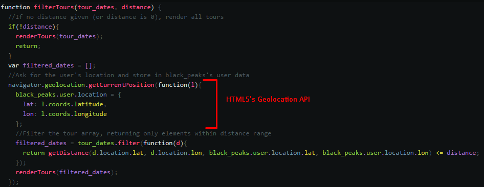
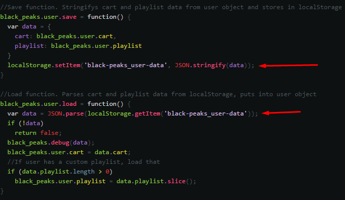

Critical Log
Web Standards & Best Practices
When it came to applying web standards and best practices to the website, relevant W3C web standards were identified as the following:
- HTML
- CSS
- The DOM
In addition, ECMA’s web standards relating to ECMAScript (of which JavaScript is a dialect) were identified as being of importance.
Whilst W3C standards also include another mark-up language for documents, XML, it is clear that HTML was the stronger option for writing the webpage documents, given that “It is compatible with most legacy Web browsers.” (W3C 2017). This is also what W3C say is “the format suggested for most authors.” (W3C 2017)
Regarding best practices, a number were used in the construction of the site. When it came to programming, these best practices included effective indentation in the code, as well as commenting. These ensured that the site could be built efficiently, as there was rarely any doubt as to how the code in question worked/what it was doing.
Further regarding best practices, the website employs external CSS and JS files, linked to from the HTML. This also segues nicely into another best practice: using clear, logical file structure. That is, is to structure the files into folders using relevant names. This avoids polluting the root folder with too many files, and allows a logical way of thinking about the website’s file structure.
When structuring JavaScript, a best practice (Douglas Crockford 2008, p.97) used was to avoid polluting the global namespace by wrapping methods/variables in a couple of global objects (one for the player, one for user/page-setup data).
Since this site was structured as an SPA (Single Page Application), a best practice used was to make use of the window.onhashchange event to feign URL changes and fire of relevant setup events.
Current Standards/Specifications
The latest version of HTML—HTML5 —brings with it many advantages over previous HTML specifications. Many of these were thus used when designing this website.
The HTML5 specification includes multimedia elements (such as audio and video). This is certainly a strength of the current specification, as it avoids the necessity of any third-party plugins. Given this website’s main feature (a customisable audio player), this ability was identified as a strength that the site could utilise.
Next, the current HTML specification includes a built-in API method to obtain the user’s geographical location. In contrast to previous specifications, this allows for easy access to this information. This, too, was identified as a relevant strength that this website could utilise in its filter-by-location feature on the tours page.
The current web specifications also include two types of client-side storage: local and session storage. This easy API allows for easy storing/retrieval of structured data. This website leveraged this feature when saving/loading a user’s cart and playlist data.
The final major advantage for the current HTML5 specification, that was identified and applied when building this website, is the addition of new semantic elements. These not only provide advantages for users using screen readers—or other non-standard methods of viewing the webpage—but also allow for a much cleaner mark-up. Thus, this site makes use of many of the new semantic elements for structuring the HTML document.
The only real disadvantage to consider with the current HTML specification is that older browsers may not support it. However, given the declining use of these older browsers, the fact that these features are supported by all modern browsers (W3CSchools 2018), the advantages of using the current HTML specification come through.
Regarding the current CSS specification, CSS3 introduced several helpful additions to the standard.
CSS3 included new units for font sizes and widths. These included vw (view width) and vh (view height). Alongside these, it introduced the calc function, for performing calculations. These features allow for dynamically sizing elements in the webpage. Whilst this could be done in previous specifications, the methods were limited.
CSS3’s media queries are also very useful for defining differences in the mobile/desktop layouts.
Finally, CSS3’s addition of the grid/flex display types allow for a great deal of flexibility when designing layouts, especially in accounting for mobile/desktop differences.
These additions makes the current specification very strong compared to its predecessors. Devices can vary radically in viewport sizes, especially as mobile browsing is now reaching the same levels as desktop browsing (The Guardian, 2016), and so the current specification is better equipped for modern (and future) browsing trends.
The latest ECMAScript specification brings an awful lot of very helpful functionality to the ES standard. As such, a few of these advantages were taken into account (such as promises, Array.Prototype.Filter, spread operators, and fat arrow functions). For the most part, however, the massive lack of compatibility for older browsers and ES2015+ specifications meant that much of the functionality was not used. As such, the current ECMAScript specification is not as strong compared to its previous versions, unlike its HTML5/CSS3 counterparts whose strengths did outweigh the compatibility weakness.
Interoperability
A number of steps were taken to ensure interoperability among browsers and devices. The success of these steps can be witnessed in the demo video.
The first was to take a ‘mobile-first’ approach to designing the website’s layout. This meant that the site was designed for mobile, with the necessary changes for desktop applied afterwards.
The use of the CSS3 specification’s additions discussed above were used to ensure every element to be scaled up/down as the device viewport changes. This ensures interoperability between devices of any/every size.
Regarding the CSS of the website, it was ensured that all necessary vendor prefixes were included, thus making sure that every browser was able to implement the styles described.
Finally, as previously described, many older browsers lack support for modern JavaScript features (notably ES2015+). As such, the use of these features was kept to a minimum, and the features used were checked against compatibility tables (kangax 2018) to ensure full modern browser support.
W3C Validation
As can be seen here, the site’s HTML successfully validates. There are some warnings, however these are necessary due to the SPA/dynamic nature of the HTML.
As can be seen here, the site’s CSS also successfully validates.
Bibliography
(W3C 2016) https://www.w3.org/TR/html51/introduction.html#html-vs-xhtml
Crockford, Douglas: JavaScript: The Good Parts (2008)
(W3CSchools 2018) https://www.w3schools.com/html/html5_browsers.asp
(The Guardian, 2016) https://www.theguardian.com/technology/2016/nov/02/mobile-web-browsing-desktop-smartphones-tablets
(Kangax 2018) https://kangax.github.io/compat-table/es6/